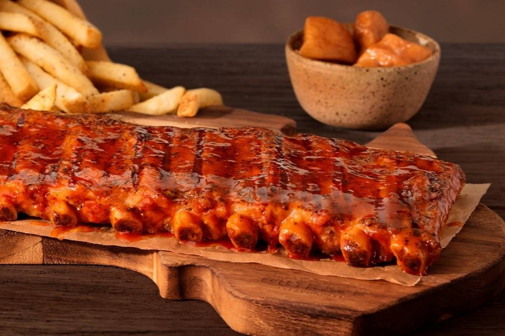

Comidas que pretendo comer um dia
Costela do Outback
Ingredientes: 
Duração 2h45min
1kg de costelinha (com pouca gordura)
1 colher (sopa) de sal
1 colher (sopa) de cebola em pó (ou desidratada)
1 colher (sopa) de alho em pó (ou desitradado)
1 colher (sopa) de páprica doce
1 colher (sopa) pimenta calabresa
1 colher (sopa) de açucar mascavo
molho de pimenta a gosto (ou Tabasco)
Modo de Preparo
Coloque a costelinha em uma forma forrada com papel alumínio com a parte brilhante virada para cima;
Fure algumas partes da carne para que o molho penetre bem;
Junte os temperos secos, incluindo o açúcar, passe em toda a costelinha;
Pingue algumas gotas de Tabasco (ou algum outro molho de sua preferência), e vire a costelinha com o osso para cima;
Enrole com o papel alumínio da assadeira, enrole mais 1 ou 2 folhas;
Leve para assar por 2 horas em forno pré-aquecido, sem abrir. É super importante respeitar esse tempo para que a carne pegue o sabor e fique macia;
Após as 2 horas, retire a costelinha, abra as folhas de alumínio e passe com um pincel o molho barbecue dos dois lados da costela;
Volte ao forno, sem o papel alumínio por mais mais 15 minutos.Retire,e pincele novamente o molho barbecue, volte ao forno por mais 15 minutos;
Retire do forno, se preferir pincele mais molho;
Sirva em seguida.
Personalidade que comeria comigo